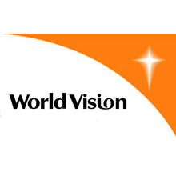

World Vision
We are a nonprofit organization dedicated to discovering and developing original stories for the screen and stage. Founded in 1981 by Robert Redford, the Institute provides independent artists with the opportunity to explore their stories free from commercial and political pressures.
Account Settings
about
history
Our goal
World Vision International, founded in the USA in 1977, is an evangelical[2] relief and development umbrella organization whose stated goal is "to follow our Lord and Saviour Jesus Christ in working with the poor and oppressed to promote human transformation, seek justice and bear witness to the good news of the Kingdom of God."[3] World Vision is one of the largest relief and development organizations in the world with a total revenue including grants, product and foreign donations of $2.6 billion (2008).[4]
History
World Vision International as an umbrella organization was founded in 1977 by Walter Stanley Mooneyham the president of World Vision.[5][6] It was the result of a restructuring process that began already in the early 1970s within World Vision Inc. which was already founded in 1950 by Bob Pierce and did business as "World Vision International" since 1966.[7] World Vision International took over most international functions which were previously fulfilled by World Vision Inc. and was headquartered in Monrovia, California, in the same building as World Vision Inc. W. Mooneyham became also president of World Vision International until 1982 when he resigned after criticism within the International Board, where the accusations ranged from a dictatorial leadership style to an ethnocentric American communication style.[8]
Already in 1967 the Mission Advanced Research and Communication Center (MARC) was founded by Ed Dayton as a Division of World Vision International. It became the organizational backbone of the Lausanne Committee for World Evangelization, collected and published data about "unreached people" and also published the "Mission Handbook: North American Protestant Ministries Overseas".[9]